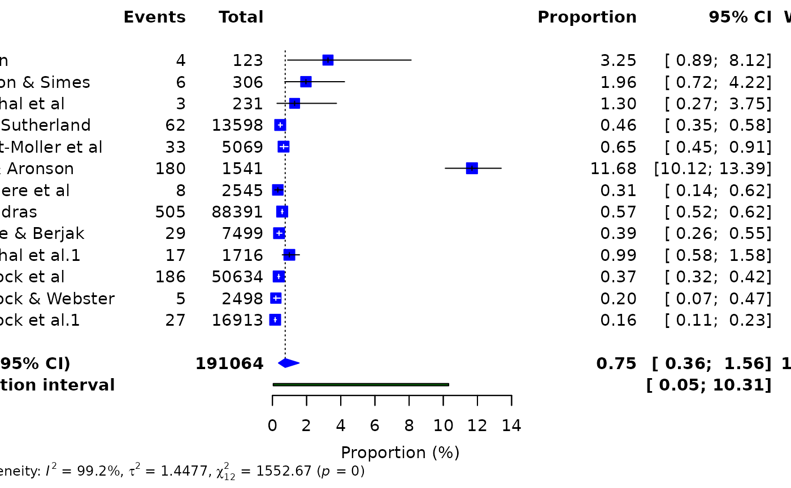

Produces a publication-ready forest plot from a supported metapropul
meta-analysis object. The appropriate plotting
method is selected automatically based on the class of x.
Details
The class-specific method preserves the original fitted model, including
subgroup estimates, tau-squared estimator, and random-effects confidence
method. Plot width, height, font size, and row spacing are selected from the
study count; plots with up to 200 studies are compressed automatically.
Explicit width or height values supplied through ...
override the corresponding automatic decision. PDF export is recommended
when individual study rows must remain readable at large study counts.
Examples
# \donttest{
data(dat_bcg, package = "metapropul")
result <- meta_prop(
data = dat_bcg,
event = "tpos",
n = "npos",
studylab = "author"
)
#> Warning: Duplicate study label(s) were made unique: Rosenthal et al, Comstock et al. See 'label_audit' in the result.
forest_meta(result)

#> Forest plot displayed in Viewer. Use save_as = 'pdf' or 'png' for publication-quality export.
# }